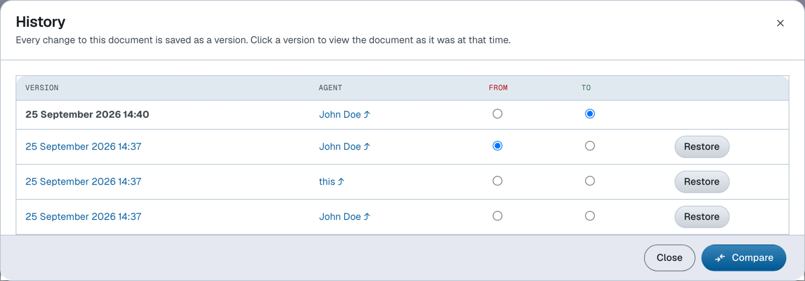
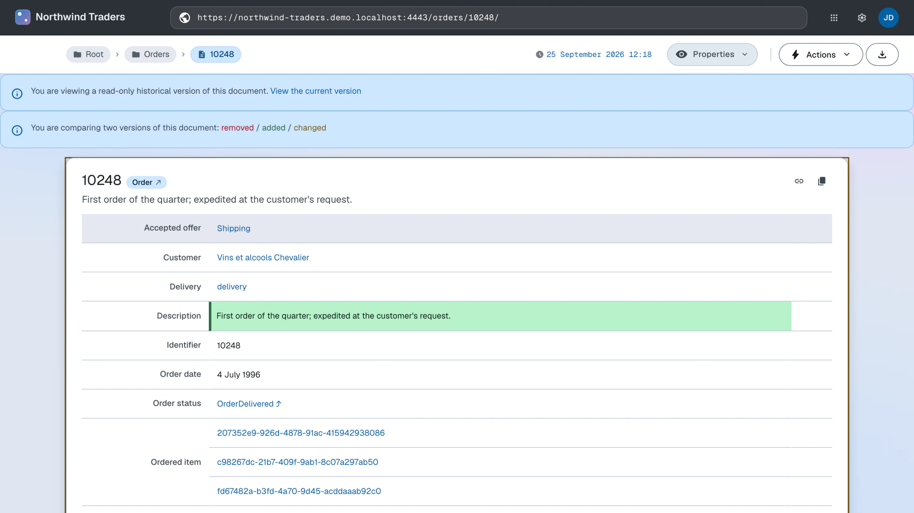

Version history
View, compare and restore document versions
Version history is available in dataspaces with versioning enabled — see the setup instructions.
Open the history

Click the document's last-modified timestamp in the action bar. The History dialog opens with the document's versions listed newest first, each showing its datetime and the agent who authored it. The version you are currently viewing is marked.
Click a version to view the document as it was at that point. A notice banner reminds you that you are viewing a historical version and links back to the current one. Historical versions are read-only.
Compare versions

In the History dialog, select a From and a To version to compare. The diff renders on the document page:
- added, removed and changed parts are marked with distinct borders, explained by a color legend
- changed property values are marked individually
- a changed XHTML block stacks its old content above the new
The diff is encoded in the URL, so browser back and forward re-render it. Reloading the page shows the plain historical version instead.
Restore a version
In the History dialog, click Restore on the version you want to bring back and confirm. The version's content is written to the live document as a new version. Nothing is rewritten: the versions in between stay in the history.
Restoring requires write access to the document; the button is not offered on the version you are currently viewing.
The CLI addresses the same Memento roles as mutually exclusive options of ldh get:
--timemap retrieves the version history, --version <sha> retrieves a historical version, and --timegate
(with an optional --datetime) prints the URI of the version that was current at the given time. For example, with
the document's URL in $doc:
ldh get --accept text/turtle --timemap "$doc"